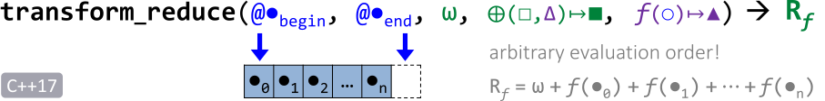

数学函数
基本数值计算
#include <cmath>
double sqrt(double x) // √x square root
double pow(double a, double b) // a^b power
double abs(double x) // |x| absolute value
double sin(double x) // sin(x) sine
double cos(double x) // cos(x) cosine
double exp(double x) // ex exponential
double log(double x) // log(x) logarithm
double floor(double x) // ⌊x⌋ next smaller integer
double ceil(double x) // ⌈x⌉ next larger integer
double fmod(double x, double y)// remainder of x/y
随机数
随机数生成器
随机数生成器：分布+发生器。
#include <random>
auto urng = std:mt19937{}; // Mersenne Twister
urng.seed(1001);
auto dist = std:uniform_int_distribution<int>{1,6};
int x = dist(urng); // 生成随机数
dist = std:uniform_real_distribution<float>{1.0,6.0};
rand, srand, rand_r
#include <stdlib.h> int rand(void); void srand(unsigned int seed); int rand_r(unsigned int * seedp);
rand()返回一个[0,RAND_MAX]之间的伪随机数。RAND_MAX的值可能是平台相关的，在Linux下RAND_MAX=0x7FFFFFFF，Windows下RAND_MAX=0x7FFF。srand()用于设置rand()产生随机数的种子。如果没有调用srand()函数，则默认的随机数种子为1。因为rand()使用隐藏的state来连续产生随机数，因此每次调用rand()获得的结果都是不相同，除非调用srand()重置了随机数种子，而rand()也不是线程安全的，同一进程的多个线程应该是共享同一个随机数state的。
rand_r()使用独立的变量（seedp指向的变量）存储随机数的状态。因此可以并发调用rand_r()，而互不影响各自序列的生成。但由于seedp所指变量只能提供很小的状态数，因此产生的序列的随机性可能较差。（drand48_r）
rand()使用的状态和rand_r()使用的状态是无关的。random, srandom,initstate,setstate
#include <stdlib.h> long int random(void); void srandom(unsigned int seed); char *initstate(unsigned int seed, char *state, size_t n); char *setstate(char *state);
random()产生[0,RAND_MAX]之间的随机数，random()使用的随机数发生器的周期非常长。srandom()用于设置random()产生随机数的种子。相同的种子将产生相同的随机数（序列），默认的随机数种子是1。
initstate()用于初始化random()函数用于保存状态的空间。state是保存状态的数组的首地址，n则表示数组的长度，n越大，则保存的状态越复杂，产生的序列随机性也越好，n的取值至少应该为8，少于8字节的空间会导致函数调用错误，当前“最优的”取值包括8、32、64、128和256，其他值将会被缩小为之前述的几个值。setstate()用于改变random()所使用的保存状态的空间，state必须是经过initstate()初始化过的，或先前调用setstate()的返回值。如果调用成功，则initstate()和setstate()都返回先前使用的存储状态的空间的指针。如果失败，setstate()函数返回NULL。为了保证产生的结果互不影响，
random()同样是不能用于多线程的。reentrant random generator
#include <stdio.h> int random_r(struct random_data * buf, int32_t *result); int srandom_r(unsigned int seed, struct random_data * buf); int initstate_r(unsigned int seed, char * statebuf, size_t statelen, struct random_data * buf); int setstate_r(char * statebuf, struct random_data * buf);这些函数是适合于多线程程序使用的可再入的函数，可在多个线程中产生相同的随机序列。这些函数与1.2的区别在于，使用指定的
buf存储随机数发生器的状态，而非存储在原来的一个全局变量中。
random_r()将生成的随机数通过参数result返回。所有函数在成功执行后返回0，否则返回-1。this functions are nonstandard glib extensions
算法
C++'s Standard Algorithms are
- operating on (iterator) ranges of elements and implemented as free-standing functions: allows algorithms to be implemented independent from container types (generic).
- functions as parameters: many are customizable with function(object)s / lambdas
- well-tested and efficient
#include <algorithm>
#include <memory>
Non-Modifying Queries
-
finding elements / existence queries
using namespace std; tf = all_of(@begin, @end, tf_func_check); tf = any_of(@begin, @end, tf_func_check); tf = none_of(@begin, @end, tf_func_check);==
c++20在ranges中封装了支持容器作为参数的同名函数，下同。==tf = ranges::all_of(container, check);tf = count(@begin, @end, value); tf = count_if(@begin, @end, tf_func_check);@pos = find(@begin, @end, value); // return end() if not find @pos = find_if(@begin, @end, tf_check); // return end() if not findfind_if_not()。从备选集合中查找元素：
@pos = find_first_of(@sbegin, @send, @wbegin, @wend); @pos = find_first_of(container, candidates); // c++20，下同查找子序列：
@pos = search(@sbegin, @send, @wbegin, @wend); // find 1st occurance @pos = find_end(@sbegin, @send, @wbegin, @wend); // find last occurance查找连续出现元素：
@pos = adjacent_find(@begin, @end, cmp=<); @pos = search_n(@begin, @end, n, tf_func_equal); // 连续出现n个相同元素 -
minimum / maximum
using namespace std; x = min(a,b, cmp=<); // same for max,minmax x = min({x1,x2,...}, cmp=<); // C++11 @min = min_element(@first, @last, cmp=<);// also max_element, minmax_elementminmax：返回包括最小值和最大值的元组（pair）。minmax_element返回对应迭代器组成的元组。 -
comparing ranges of elements
tf = equal(@begin1, @end1, @begin2, @end2, tf_func_equal); pair = mismatch(@begin1, @end1, @begin2, @end2, tf_func_equal);mismatch返回两个序列中不匹配位置的迭代器组成的元组。 -
binary search of sorted ranges
Modifying Operations
-
copying / moving elements
copy：目标必须具有足够空间容纳源数据。@cp_end = copy(@begin, @end, @tgt_begin); // .resize(n) @cp_end = copy_n(@begin, n, @tgt_begin); @cp_first = copy_backward(@begin, @end, @tgt_end); // 向目标容器中反向复制 @cp_end = copy_if(@begin, @end, @tgt_begin, tf_func_check);ranges::copy(src, begin(tgt))。reverse(@begin, @end); @cp_end = reverse_copy(@begin, @end, @tgt_begin); // 将源数据反向复制到目标容器移位：


移位后原位置上的元素值不改变。
循环移位：将开始区间移至末尾。

rotate_copy(@begin, @new_first, @end, @target);随机采样：
#include <random> auto rgen = std::mt19937{}; // 32 bit mersenne twister engine sample(@begin, @end, @tgt, n, rgen);随机打乱：
shuffle(@begin, @end, random_engine);排列：
next_permutation(begin(v),end(v)); prev_permutation(begin(v),end(v)); is_permutation(begin(v1), end(v1), begin(v2)); // c++11排序：
sort(@begin, @end, cmp=<); stable_sort(@begin, @end, cmp=<); tf = is_sorted(@begin, @end, cmp=<);分割：根据条件将区间元素分为两个部分。分割后区间前半部分
tf_func=true，后半部分tf_func=false。@true_end = partition(@begin, @end, tf_func); partition_copy(@begin, @end, @out1, @out2, tf_func); @true_end = stable_partition(@begin, @end, tf_func); tf = is_partitioned(@begin, @end, tf_func); @true_end = partition_point(@begin, @end, tf_func); -
replacing / transforming elements
fill(@begin, @end, value); fill_n(@begin, n, value);auto generator = [i=0]() mutable { i += 2; return i; }; generate(@begin, @end, generator); generate_n(@begin, n, generator); #include <numeric> iota(@begin, @end, value); // 使用递增数列填充区间，起始值为valuereplace(@begin, @end, old_value, new_value); replace_if(@begin, @end, f_condition, new_value);replace_copy，replace_copy_if。remove(@begin, @end, value); remove_if(@begin, @end, f_condition);remove_copy，remove_copy_if。@new_end = unique(@begin, @end);仅清除连续的重复值，并将后续值向前移动，不会重新分配内存。可以在移除前首先对数据排序，以保证最终结果唯一。（
unique_copy） -
removing elements
erase(container, value); // c++20 erase(container, f_condition); // c++20 -
union/intersection/etc. of sorted ranges
#include <iterator>
n = distance(@first, @last);
数值计算
#include <numeric>
序列构造
iota(@begin, @end, Type start_value=1); // iota stants for greek letter ι
map-reduce
reduce(begin(v), end(v));
reduce(begin(v), end(v), w0);
reduce(begin(v), end(v), w0, func); // 默认运算为+
未提供初始值
w0时，将区间的第一个值作为初始值。
差分
adjacent_difference(@begin, @end, @out, diff_func=-); //C++17: custom operator
inclusive_scan(@begin, @end, @out, operator=+);
inclusive_scan,transform_inclusive_scan：输入的第一个元素为输出结果的第一个元素（c++17）。
exclusive_scan,transform_exclusive_scan：输出第一个元素为0，最后一个输入元素不会参与运算。
有序序列
查找有序序列：
tf = binary_search(@begin, @end, value, comp=<);
@pos=lower_bound(upper_bound)：查找不小（大）于指定值的第一个元素；
<@start,@end>=equal_range()：查找等于指定值的子序列；
tf=includes(...)：查找子序列；
合并有序序列：
merge(@begin1, @end1, @begin2, @end2, @out);
集合运算
@end=set_union(@begin1, @end1, @begin2, @end2, @out, compare=<);
set_intersection、set_difference（在s1中而不在s2中）、set_symmtric_difference（仅在s1或s2中）。
函数对象
比较运算
#include <functional>
-
std::equal_to -
std::not_equal_to -
std::greater -
std::less -
std::greater_equal -
std::less_equal -
C++11 must specify operand type explicitly:
std::greater<Type>{} -
C++14 no need for specifying operand type:
std::greater<>{}
算术运算
std::plusstd::minusstd::multipliesstd::dividesstd::modulusstd::negate